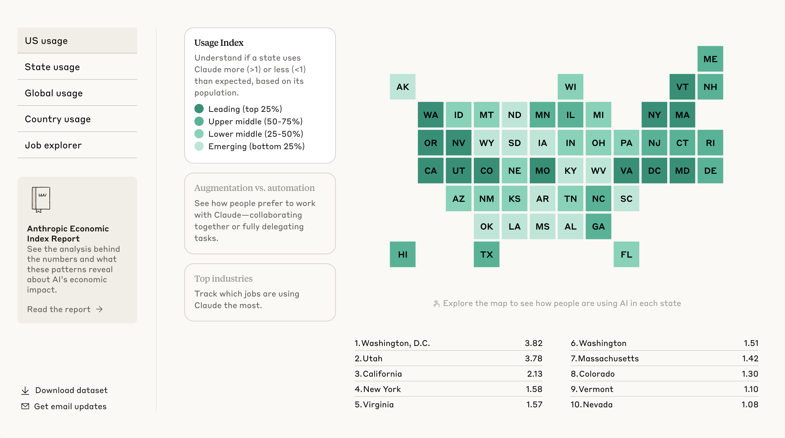

Executive Summary
회사가 공익을 약속할 때 숫자는 먼저 나오고 명단은 나중에 나온다. 10월 18일 앤트로픽이 내놓은 발표도 그 순서를 따랐다. 지분 5%라는 몫은 확정해 적었고, 그 돈을 누가 운영하며 누구에게 나눌지는 적지 않았다. 이 글은 발표문이 못 박은 것과 비워 둔 것을 갈라 놓고, 그 빈칸을 채우려면 무엇이 먼저 있어야 하는지를 본다.
기금은 앤트로픽이 100% 소유하는 LLC다. 주주 승인을 받으면 지분 5%가 이쪽으로 넘어가고, 쓰임새로는 AI가 노동시장에 미칠 충격에 대응하는 일이 거론됐다. 그런데 기금을 누가 운영하는지, 받을 사람을 무엇으로 가리는지, 지분을 더 얹는 기준이 되는 기업가치가 얼마인지는 앞으로 몇 달 안에 밝히겠다고만 적혀 있다.
4절까지는 발표문과 보도에 적힌 사실을 따라간다. 돈을 내는 쪽과 받을 사람을 가리는 쪽이 같아지면 무엇이 달라지는지를 묻는 5절은 이 글의 해석이다.
주요 수치
앞의 셋은 이번 발표문이 확정해 적은 몫이고, 마지막 하나는 앤트로픽이 같은 문제에 이번 기금과 별도로 약정해 둔 돈이다.
출처: Anthropic(2026년 10월 18일), TechCrunch(2026년 10월 18일).
5%
기금으로 넘기기로 한 회사 지분
주주 승인을 받아야 효력이 생긴다
50%마다 2%
가치가 오를 때 더 얹는 몫
기업가치가 기준선 대비 50% 오를 때마다 이사회 재량으로
약 20%
공익 용도로 지정된 지분 전체
창업자 기부 서약과 직원 매칭까지 합한 회사 설명
2억 달러
노동시장 충격 연구에 약정한 돈
올해 7월에 연 외부 연구 공모에 내건 금액이다
10월 18일, 발표문이 숫자로 못 박은 것
앤트로픽이 'Investing in the public benefit'이라는 제목의 글을 올렸다. 회사 지분의 5%를 공익 기금에 넣겠다는 발표다. 기금은 별도의 비영리 재단이 아니라 앤트로픽이 100% 소유하는 LLC로 세운다. 세제 혜택이 붙는 501(c)(3) 형태를 택하지 않은 이유로 회사는 유연성을 들었다. 지분 이전은 주주 승인을 받아야 효력이 생기므로, 지금 확정된 것은 회사의 제안까지다.
약속은 한 번으로 끝나지 않는다. 기업가치가 기준선 대비 50% 오를 때마다 이사회 재량으로 2%를 더 넣는 조건이 붙어 있다. 여기에 창업자들이 이미 서약한 보유 지분 80% 기부와 직원 매칭 프로그램을 더하면 약 20%가 공익 용도로 지정된다는 것이 회사의 설명이다. 직원은 절반가량이 매칭에 참여했고, 가치 상승으로 더해질 몫은 이 20%에 포함되지 않는다. 기금 자금으로 미국 안팎에서 로비나 정치 기부를 하지 않는다는 조항도 함께 적혔다.
규모를 가늠해 보면 작지 않다. 지난 5월 시리즈 H 투자에서 매긴 마지막 비상장 기업가치가 9,650억 달러이니, 그 기준으로 5%는 480억 달러쯤 된다. 다만 이 금액은 어느 기업가치를 들고 오느냐에 따라 움직인다. 기업공개를 앞두고 투자자들 사이에서 거론되는 1조 5,000억 달러를 기준으로 삼으면 같은 5%가 750억 달러가 된다. 회의적인 쪽으로 가면 폭이 더 벌어진다. 리서치 회사 뉴 컨스트럭츠는 10월 6일 보고서에서 앤트로픽의 가치를 중간 시나리오 1조 1,000억 달러, 가장 보수적인 시나리오 1,440억 달러로 잡았다. 뒤쪽 기준이면 5%는 72억 달러다.
여기서 말하는 기업가치와, 지분 2%를 더 얹을 때 쓰겠다는 기준선은 서로 다른 숫자다. 뒤쪽 기준선은 발표문에 적히지 않았다. 그러니 5%가 얼마인지도, 2%가 언제 붙는지도 지금은 회사 바깥에서 계산할 수 없다.
발표가 나온 시점도 함께 읽힌다. 앤트로픽은 10월 14일 샌프란시스코 본사에서 연 투자자 설명회에서 3분기 매출이 168억 달러라고 밝혔다. 직전 분기보다 45% 늘어난 수치인데, 2분기에 매출이 두 배로 뛰었던 것과 견주면 속도가 꺾였다. 그 자리에 다녀온 투자자들이 기업가치를 1조 5,000억 달러 안팎으로 말하기 시작했다고 로이터가 다음 날 전했다. 한때 기대치는 2조 달러였다. 공익 기금 발표는 그로부터 사흘 뒤 일요일에 나왔다.
CNBC는 기업공개 자문가 리즈 바이어의 말을 빌려 AI를 향한 감시가 세진 시점에 평판을 다지기 좋은 타이밍이라고 전했다. 바이어는 기금이 재훈련이나 재취업을 돕는 데 쓰인다면 좋게 볼 만하다는 단서도 달았다. 쓰임새를 보고 판단하겠다는 뜻이다. 다리오 아모데이 최고경영자 본인은 이번 발표를 업계가 맞은 신뢰의 위기에 대한 답으로 설명했다.
쓰임새는 적혀 있고 받을 사람은 비어 있다
발표문은 돈을 쓰는 방식을 두 갈래로 적었다. 전통적인 비영리 단체에 대규모로 기부하는 방식과, 특정 인구집단에 직접 분배하는 방식이다. 뒤쪽이 눈에 띈다. 단체를 거치지 않고 사람에게 바로 준다는 뜻이기 때문이다. AI 안전과 해석가능성 연구, 생의료 연구도 같은 목록에 들어 있다.
직접 분배의 대상으로 가장 먼저 떠오르는 집단이 AI 때문에 일자리를 잃은 사람들이다. 앤트로픽은 노동시장 충격을 연구하고 대응하는 데 이미 2억 달러를 약정했다고 밝혔고, AI가 나아가는 속도를 보면 더 과감한 접근이 필요할 수 있다고 덧붙였다. 이번 기금에 고용 충격 대응이 따라붙은 배경이다.
그 2억 달러가 무엇인지는 따로 볼 만하다. 올해 7월에 연 경제 미래 연구 기금으로, 바깥의 대학과 연구기관, 비영리 단체에 건당 500만에서 3,000만 달러 규모로 대규모 실험이나 시범 사업을 맡기겠다는 공모다. 공모 안내에는 누가 지원할 수 있는지가 적혀 있다. 그런데 들어온 제안을 누가 심사해 고르는지는 적혀 있지 않다. 돈을 받을 쪽을 정하는 절차가 비어 있는 일은 이번 기금에서 처음이 아니다.
정해지지 않은 것은 셋이다. 첫째, 지분을 더 얹는 기준이 되는 기업가치의 기준선이 얼마인지. 둘째, 기금을 누가 운영하고 누가 집행을 결정하는지. 셋째, 돈을 받을 사람을 무엇으로 가리는지. 발표문은 이 셋을 앞으로 몇 달 안에 밝히겠다고만 적었다.
비워 둔 것을 숨긴 것으로 읽을 필요는 없다. 발표 시점에 아직 정해지지 않았다고 보는 편이 사실에 가깝다. 다만 셋 중 셋째는 나머지 둘과 성격이 다르다. 기준선은 계산의 문제이고 운영 주체는 인선의 문제지만, 받을 사람을 가리는 일은 그 전에 자료가 있어야 한다.
비판은 액수가 아니라 정하는 절차를 겨눈다
발표 직후 나온 반응은 금액을 문제 삼지 않았다. 일론 머스크는 별도의 LLC를 만들 것이 아니라 주식을 대중에게 직접 나눠 주라고 했다. 전 백악관 AI 정책 책임자인 데이비드 색스는 20%를 LLC에 넣었다는 사실만 확인될 뿐 그 돈이 실제로 공익에 쓰이는지는 알 수 없다고 적었다. 오큘러스 창업자 팔머 러키는 공익의 범위를 어디까지로 잡을 것인지를 물었다.
결이 다른 말들인데 겨누는 자리는 비슷하다. 셋 다 이사회 말고는 아무도 들여다보지 않는 구조를 문제 삼는다. 지분을 얼마나 떼었느냐가 아니라 그 돈의 주인을 누가 정하느냐를 묻고 있다.
다만 이 비판들이 멈춰 선 자리가 있다. 누가 결정하느냐까지는 갔지만, 그 결정에 쓸 자료가 어디서 나오느냐는 묻지 않았다. 수혜 대상을 사람 단위로 고른다면 결정권자의 이름만으로는 아무것도 정해지지 않는다. 어느 해고가 AI 탓인지를 가려낸 자료가 있어야 명단이 나온다.
기금의 설계에서 가장 늦게 정해지는 것이 보통 수혜 기준이다. 그리고 그 기준은 돈보다 자료에 묶여 있다. 가릴 자료가 없으면 기준을 아무리 공정하게 써도 적용할 대상이 나오지 않는다.
앤트로픽 경제 지수는 실직자를 짚어 내지 못한다
앤트로픽은 AI가 노동시장을 어떻게 건드리는지를 이미 숫자로 만들어 봤다. 2025년부터 공개해 온 앤트로픽 경제 지수(Anthropic Economic Index)는 자사 모델에 들어온 대화를 직업별 과업에 대응시켜, 어떤 일이 AI 사용과 얼마나 겹치는지를 관찰 노출도(observed exposure)라는 값으로 집계한다. 공공 통계가 따라가지 못하는 속도를 민간 로그로 메운 시도였고, 이 주제에서 가장 자주 인용되는 자료 가운데 하나가 됐다.

그런데 이 지수로는 어떤 직군의 과업이 모델 사용과 겹치는지까지만 알 수 있다. 그 직군에서 누가 왜 일자리를 잃었는지는 알 수 없다. 앤트로픽이 올해 3월에 내놓은 측정 논문도 같은 말을 한다. 노출도가 가장 높은 직군에서 실업률이 올라간 흔적은 찾지 못했고, 대신 22~25세가 그런 직군에서 일자리를 구할 확률이 14% 낮아졌다고 적었다. 그러면서 이 수치도 통계적으로 간신히 유의한 수준이라고 덧붙였다. 스탠퍼드 디지털 이코노미 랩이 8월에 고쳐 낸 분석은 같은 연령대의 고용이 덜 노출된 또래보다 19% 아래로 벌어졌다고 보고했는데, 여기서도 벌어진 경로는 해고가 아니라 채용이었다.
외부의 지적은 한 걸음 더 간다. 포브스에 실린 해밀턴 만의 비평은 이 지수를 AI 때문에 밀려날 위험의 증거로 읽어서는 안 된다고 경고했다. 지수를 떠받치는 자료가 클로드에 들어온 대화뿐이어서, 이 지수는 경제 전체가 아니라 앤트로픽의 사용자층을 비춘다. 사무실에서는 다른 회사 모델과 자동화 도구도 함께 돌아간다. 만은 노출도를 일자리가 먼저 사라지는 자리가 아니라 일이 먼저 바뀌는 자리로 읽어야 한다고 정리했다.
정리하면 이렇다. 지금 존재하는 가장 체계적인 측정 도구조차 이 사람은 AI 탓에 일자리를 잃었다는 문장을 혼자서는 쓰지 못한다. 게다가 지금까지 가장 또렷하게 잡힌 변화는 해고가 아니라 줄어든 채용이다. 채용되지 않은 사람은 실직자 명부에 오르지 않는다. 회사의 해고 사유란에도, 실업급여 신청서에도 그 사람의 자리는 없다. 기금이 사람을 골라 돈을 주려면 그 문장을 쓸 수 있는 자료가 어딘가에서 새로 만들어져야 한다.
페블러스가 이 기금을 주목하는 이유
기금이 사람에게 직접 돈을 주는 쪽을 택하는 순간 앤트로픽은 두 자리에 동시에 서게 된다. 돈을 내는 자리와, 누가 피해자인지 가리는 자리다. 가릴 자료를 가진 쪽도 현재로서는 앤트로픽이다. 자기 모델에 들어온 대화를 자기가 집계한 지수가 이 주제에서 가장 촘촘한 자료이기 때문이다.
그 지수를 쓰지 않으면 문제가 풀리느냐 하면 그것도 아니다. 공공 고용 통계는 분기와 직업 분류 단위로 움직여서 개인의 실직 사유까지 내려가지 못하고, 민간 해고 추적 자료는 회사가 사유란에 AI라고 적은 건수를 셀 뿐이다. 어느 쪽도 한 사람의 실직을 AI에 귀속시키지 못한다. 대안이 마땅치 않다는 사정이 이해상충을 지워 주지는 않는다.
그래서 몇 달 안에 밝히겠다는 유예를 관료적 지연으로만 보기는 어렵다. 미뤄 둔 셋 가운데 수혜 기준은 사람을 더 붙인다고 정해지는 문제가 아니다. 기준을 쓰려면 그 기준을 적용할 자료가 있어야 하고, 그 자료가 아직 없다.
데이터를 다루는 쪽에서 보면 익숙한 모양이다. 측정 기준을 만드는 쪽과 그 측정으로 득실이 갈리는 쪽이 같으면, 결과가 맞아도 믿기 어려워진다. 품질 지표를 설계한 팀이 그 지표로 자기 성과를 평가받는 구조를 피하는 이유와 같다. 기금의 전제 조건은 돈이 아니라 자료이고, 자료의 전제 조건은 그것을 만든 쪽 바깥에 검증하는 눈이 있는지다.
공개될 문서에서 금액 말고 확인할 것은 셋이다.
- • 판정에 쓰는 자료의 출처. 수혜 대상을 가릴 때 어떤 자료를 쓰는지, 그 자료를 누가 모으고 어디에 보관하는지가 적혀 있는가. 자체 지수를 쓴다면 그 사실을 밝히는 것부터가 출발점이다
- • 바깥의 검증자. 판정 결과를 앤트로픽 바깥의 누가 다시 볼 수 있는가. 보는 사람이 있어도 원자료에 접근하지 못하면 검증이 아니라 결과 통보를 받는 것이다
- • 떨어진 쪽의 창구. 대상에서 빠진 사람이 판정을 다툴 절차가 있는가. 이의 제기를 받는 창구가 없으면 기준이 틀렸을 때 그것을 알아낼 방법도 없다
약 20%라는 숫자는 이 셋이 채워지기 전까지 약속의 크기이지 집행의 크기가 아니다. 그리고 셋 다 돈을 더 넣는다고 채워지지 않는다.
Editor's Note
기부 서약은 액수로 기억되고 집행으로 잊힌다. 이번 발표가 다른 점이 있다면, 돈을 받을 사람을 특정하겠다고 먼저 말한 쪽이라는 것이다. 단체에 주는 돈은 영수증으로 끝나지만 사람에게 주는 돈은 명단을 남긴다. 그 명단을 무엇으로 만드는지가 몇 달 뒤 문서의 진짜 분량이 될 것이다.
여기까지 읽어 주셔서 감사하다. 이 글의 사실관계는 앤트로픽 발표문과 TechCrunch·CNBC 보도에서 확인했고, 경제 지수에 관한 평가는 지수 공개 문서와 앤트로픽의 측정 논문, 포브스 비평에서 가져왔다. 기금 구조와 수혜 기준이 공개되면 그 내용은 따로 다루겠다. 사내에서 AI 도입의 인력 영향을 어떤 자료로 기록해 두셨는지 사례가 있다면 나눠 주시면 좋겠다.
(주)페블러스 데이터 커뮤니케이션팀
2026년 10월 20일
참고문헌
- 1.Anthropic. (2026). "Investing in the public benefit." Anthropic News, 2026년 10월 18일. 지분 5% 이전, 가치 상승 시 2% 추가, 약 20% 지정, 로비·정치 기부 금지 조항 — 본문 1·2절의 1차 근거.
- 2.TechCrunch. (2026). "Anthropic says it's committing 5% of its shares to a public benefit fund." TechCrunch, 2026년 10월 18일. 발표 수치 재확인과 공익기업 구조 설명, 신뢰의 위기 발언 — 본문 1·2절의 근거.
- 3.CNBC. (2026). "Anthropic commits 5% of shares to public benefit fund." CNBC, 2026년 10월 18일. LLC 구조와 501(c)(3) 미채택 사유, 3분기 매출·기업공개 일정, 리즈 바이어 코멘트 — 본문 1절의 근거.
- 4.Anthropic. "Anthropic Economic Index." 관찰 노출도 산출 방식과 고용 추세 해석 — 본문 4절의 근거.
- 5.Massenkoff, M., & McCrory, P. (2026). "Labor market impacts of AI: A new measure and early evidence." Anthropic Research, 2026년 3월 5일. 고노출 직군의 실업률 영향 없음, 22~25세 일자리 찾기 확률 14% 하락과 그 통계적 단서 — 본문 4절과 FAQ의 근거.
- 6.Mann, H. (2026). "Anthropic's Study Does Not Measure AI's Labor-Market Impacts." Forbes, 2026년 3월 8일. 자료가 클로드 사용 기록 하나로 좁다는 지적과 노출도 해석 — 본문 4절의 근거.
- 7.Brynjolfsson, E., Chandar, B., & Chen, R. (2026). "Canaries in the Coal Mine? Six Facts about the Recent Employment Effects of Artificial Intelligence." Stanford Digital Economy Lab, 2026년 8월 개정판. 22~25세 고용 격차 19%와 그 경로가 채용이라는 분석 — 본문 4절의 근거.
- 8.Anthropic. (2026). "Economic Futures Research Fund: research agenda." 2026년 7월 22일. 2억 달러 공모의 지원 자격과 건당 500만~3,000만 달러 규모 — 본문 2절의 근거.
- 9.Reuters. (2026). "Anthropic IPO valuation expectations cool as revenue growth slows." 2026년 10월 15~16일(야후 파이낸스 미러). 10월 14일 투자자 설명회, 3분기 매출 168억 달러와 45% 증가, 1조 5,000억 달러와 2조 달러 — 본문 1절의 근거.
- 10.The Next Web. (2026). "Research firm calls Anthropic the 'most ridiculous IPO of 2026', says it may be worth $144bn." 뉴 컨스트럭츠 2026년 10월 6일 보고서의 시나리오별 기업가치 — 본문 1절의 근거.